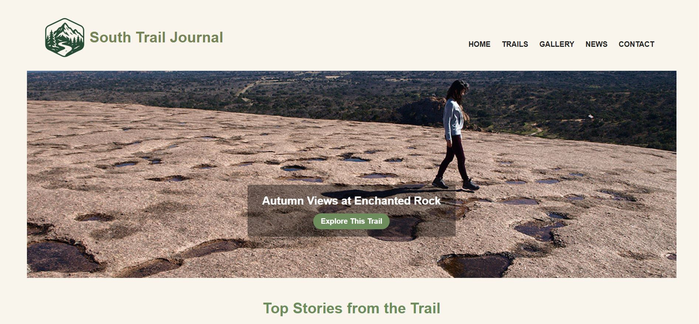
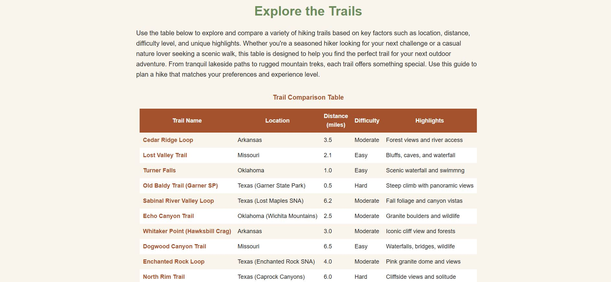
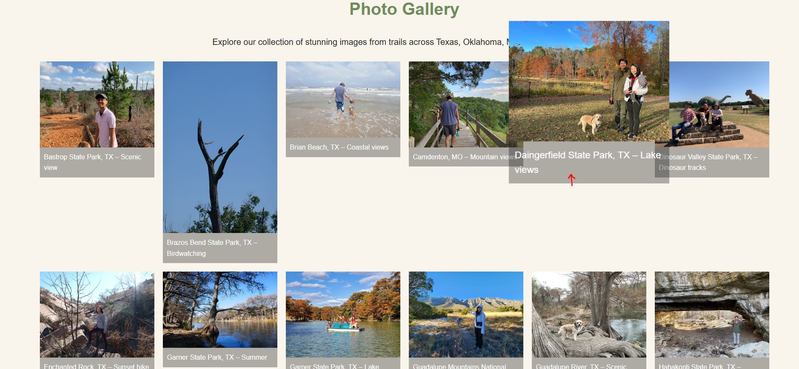
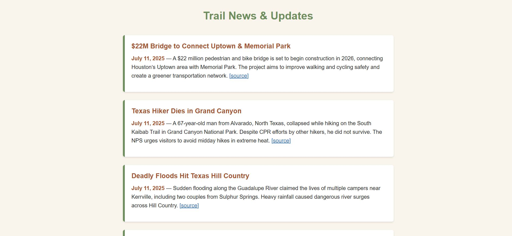
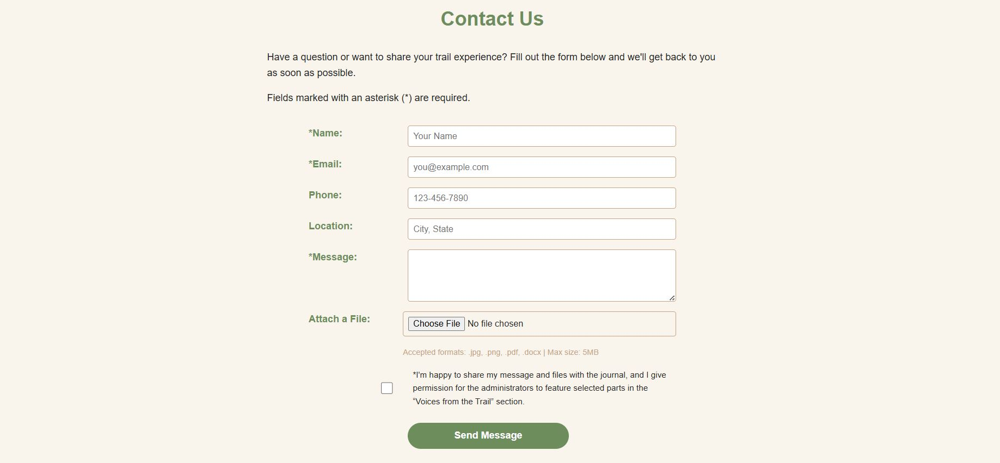
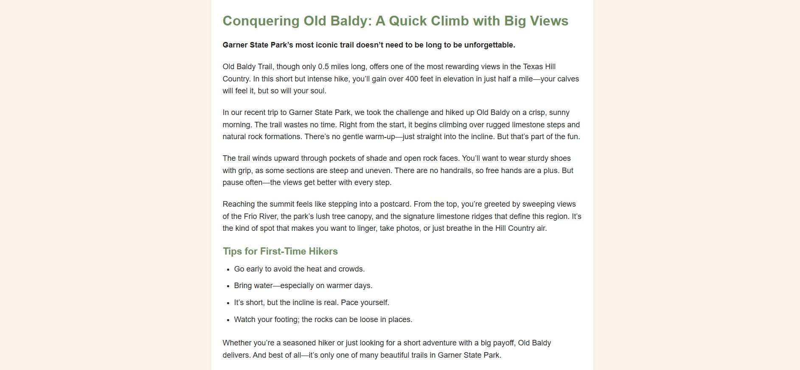

The palette was derived from the landscape itself — warm parchment backgrounds evoking worn trail maps, earthy greens reflecting forest canopy, and terracotta accents referencing Texas Hill Country rock. All colors were defined as CSS custom properties in :root for consistency across all 6 pages.
Flat, Accessible Navigation
Kept navigation as a single top bar with 5 direct links — no dropdowns or nested menus. This reduced cognitive load for users who arrive with a specific page in mind (e.g., finding a trail), and made responsive design simpler: the menu collapses cleanly on mobile.
CSS Custom Properties System
All colors and key spacing values were defined as CSS variables in :root, shared across pages via a single linked stylesheet. This ensured visual consistency without duplicating declarations, and made future updates a single-line change.
Mobile-First Responsive Layout
Base styles were written for mobile, then progressively enhanced for tablet and desktop using CSS Grid and Flexbox breakpoints. The gallery page in particular required careful grid adjustment — shifting from 1 column on small screens to a 5-column masonry-style layout on desktop.
SEO Meta Tags Per Page
Rather than reusing the same generic description, each page received a unique meta description and relevant keywords tailored to that page's content. This was one of the more satisfying course discoveries — understanding how page metadata connects design intent to search visibility.
04 — Challenges & Solutions
Problems encountered, problems solved
Every project has friction. Here are the three most significant technical challenges I faced and what I did to resolve each.
01
W3C Validation Failures
My initial HTML failed the W3C validator due to incorrect nesting — particularly around <iframe> elements embedded inside <section> and <article> tags. The error messages were dense and hard to interpret at first.
02
Broken Images After GitHub Pages Deploy
Locally, all images rendered correctly. After pushing to GitHub Pages, a significant number of images disappeared — the result of case-sensitive file path differences between Windows and Linux file systems.
03
Responsive Layout: Spacing & Alignment
Several sections — particularly the card grid on the homepage and the trail comparison table — broke unpredictably at certain viewport widths. Elements overlapped or collapsed in unexpected ways that didn't appear in the desktop preview.
05 — Pages Built
Six pages, one cohesive system
Each page was designed to serve a distinct user need while sharing the same navigation, footer, color system, and typographic rhythm.

Home
Hero slideshow, featured trail cards, testimonials section, and footer with email link.
hero image
card grid
email link

Trails
Trail comparison table with difficulty ratings, distances, and highlights for 10 trails.
HTML table
comparison

Gallery
Photo grid of 20+ self-shot trail photos plus an embedded YouTube video highlight reel.
photo grid
video embed
external links

News
Trail closures, policy updates, and hiking news with 10+ sourced external links.
external links ×10
news list

Contact
6-field contact form with file upload, consent checkbox, and accessible field labels.
HTML form
file upload
checkbox

Old Baldy Trail
Detailed trail guide with personal narrative, tips list, embedded video, and Garner State Park context.
long-form content
video embed
tips list
06 — Reflection
What I took away
Looking back at this project with fresh eyes, here's what I learned and what I'd approach differently next time.
✦ What I Learned
HTML structure decisions at the start save hours of refactoring later
CSS custom properties are the simplest way to maintain visual consistency across multiple pages
Deploying to a live server (GitHub Pages) reveals issues that local testing cannot — especially file paths
SEO meta tags are not an afterthought; they're part of the content design
Responsive design is best tested by slowly resizing, not just at preset breakpoints
→ What I'd Do Differently
Plan layout structure in Figma before writing a single line of HTML
Add JavaScript for the search bar and interactive filtering features I had to cut
Document CSS changes as I go — reverting accidental breakage would have been easier
Test on real devices, not just browser DevTools responsive mode
Start Google Analytics earlier to gather more meaningful data before submission
Ready to explore the trail?
View the live site or browse other projects in my portfolio.